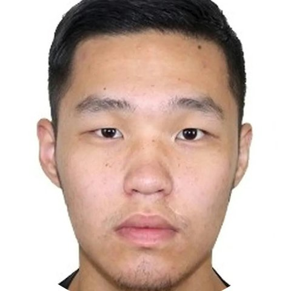

Шинэ боломжид нээлттэйOpen to new opportunitiesГанцогтGantsogt ЗагдсүрэнZagdsuren
Өгөгдлийн шинжээч ба программ хангамжийн инженер. Түүхий өгөгдлийг цэвэр, ойлгомжтой, шийдвэр гаргахад хэрэгтэй тайлан болгодог. Data analyst and software engineer. I turn raw data into clean, clear reports that people can make decisions with.
“Төгс программ гэж байдаггүй. Алдаанаасаа суралцаж, энгийн бөгөөд зөв шийдлийг тасралтгүй эрэлхийлэх нь л жинхэнэ төгс байдал.” “There is no perfect program. Learning from mistakes and constantly searching for the simple, right solution — that is what perfection really is.”
Би мэдээлэл боловсруулахыг үйлдвэрийн машин бүтээхтэй адилтгадаг: түүхий өгөгдлийг цэвэрлэж, боловсруулан, шийдвэр гаргахад хэрэгтэй тайлан болгодог. Өгөгдөлд тохирсон бүтэц, багажийг сонгож, системийг байнга сайжруулж байх ёстой гэж үздэг.
I see data processing as building a factory machine: raw data goes in, gets cleaned and processed, and comes out as a report that supports real decisions. I believe in choosing the right structure and tools for the data — and in improving the system continuously.
Өгөгдлийн бүтэц, алгоритмд дуртай бөгөөд кибер аюулгүй байдал, Linux (Arch), график дизайныг сонирхон судалдаг. Хариуцлагатай, сахилга баттай, багаар ажиллах чадвартай.
I love data structures and algorithms, and spend my free time exploring cybersecurity, Linux (Arch) and graphic design. Responsible, disciplined, and a strong team player.
ЦэвэрлэхClean
Олон эх үүсвэрээс өгөгдөл татаж, алдааг засна.Pull data from many sources and fix what's broken.
БоловсруулахProcess
Зөв бүтэц, автоматжуулалтаар нэгтгэнэ.Structure and automate it with the right tools.
ШийдвэрDecide
Ойлгомжтой тайлан, дашбоард болгоно.Deliver clear reports and dashboards.
Уул уурхайн өгөгдөлтэй ажилласан ньWorking with data in mining
Уул уурхайн диспетчерMining Dispatcher
- Диспетчерийн Excel бүртгэлийн системийг хөгжүүлж, ээлжийн тайланг автоматжуулан алдааг бууруулж, тайлан гаргах хугацааг богиносгосон.
- Техникийн мото цаг, бэлэн байдал, ашиглалтын түвшинг тооцож, сайжруулах санал боловсруулсан.
- Өрмийн мэдээ (цооног, гүн, метр)-г ээлж бүрээр нэгтгэн удирдлагад тайлагнасан.
- Төлөвлөгөө ба гүйцэтгэлийг харьцуулж, зөрүүний шалтгааныг тодорхойлсон; операторууд, мастер, засварын багийн харилцааг зохицуулсан.
- Developed the dispatch Excel logging system, automating shift reports — fewer data errors and faster reporting.
- Tracked equipment engine hours, availability and utilization, and proposed improvements.
- Consolidated drilling data (holes, depth, meters drilled) every shift and reported to management.
- Compared plan vs. actual, identified the causes of gaps, and coordinated operators, shift masters and maintenance teams.
Уул уурхайн диспетчерMining Dispatcher
- Excel VBA макро бичиж, тайлан боловсруулалт, өгөгдөл нэгтгэлийг автоматжуулсан.
- Power Query, Power Pivot, Power BI ашиглан удирдлагын шийдвэр гаргалтад зориулсан интерактив дашбоард хөгжүүлсэн.
- SharePoint болон бусад эх үүсвэрээс өгөгдөл татах, цэвэрлэх query бичсэн.
- Тайлангийн загвар, стандартчиллыг сайжруулж, хурлын шийдвэрийн хэрэгжилтийг хянасан.
- Wrote Excel VBA macros to automate reporting and data consolidation.
- Built interactive dashboards with Power Query, Power Pivot and Power BI for management decisions.
- Wrote queries to pull and clean data from SharePoint and other sources.
- Standardized report templates and tracked the follow-through on meeting decisions.
Шинжлэх Ухаан Технологийн Их СургуульMongolian University of Science and Technology
Бакалавр · Программ хангамжBachelor's · Software Engineering
Багаж хэрэгсэлToolkit
Өгөгдөл ба тайлагналData & reporting
ПрограммчлалProgramming
ДизайнDesign
ХэлLanguages
СонирхолInterests
СпортSports
Хамтдаа ажиллая.Let's work together.
Өгөгдөл, тайлагнал, автоматжуулалтын төсөл байна уу? Надтай холбогдоорой.Have a data, reporting or automation project? I'd love to hear about it.